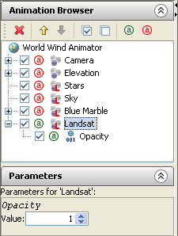

Welcome to the World Wind Animator Tutorials. This document is a series of tutorials that have been written in order to help you, the user, get failure with using the animator.
Talk about how much is knowledge assumed in the tutorials, and give a brief overview of the animator's use.In this tutorial we are going to create a short animation in which the camera will zoom into a place, all the way from orbit. Whilst creating this animation we will cover the camera controls; how to set keyframes and create animation; and how to animate an object's and layer's parameters.
Top
When you first open the animator, the first thing you should see is the earth. By default, the camera will be pointing into the ocean west of Japan, east of the international date line. In the center of the screen there will be a crosshair. They show what the camera is currently pointing at.
Left click close to it and, holding the button down, move the mouse to the right. You will notice the globe spinning with the mouse. This is called panning the camera. What is actually happening is you are moving the camera target along the ground, rotating the camera around the earth. Moving the camera up and down will pan down and up. Pan the camera until you can see a familiar country.
When you have found a place that you know, rotate the mouse wheel. Spinning it up zooms the camera in by increments, and spinning it down zooms out. Notice that it jerks forward and backward. Try holding down the mouse wheel, using it as a button, and dragging the mouse up and down. Doing this zooms in smoothly. Using it with the pan tool, try to find somewhere you know; A city or town, perhaps, or something interesting like a tall mountain, or mountain range.
As you zoom into places you will notice that as you get closer, the land scape will get more detailed. Because both the image of the earth and the size of the data is so large it has been broken up into smaller tiles at different levels of detail. The animator downloads the tiles from the Internet as it needs them, so that it doesn't get unneeded and unused data.
You will also notice that the image texturing the earth will change when you get close enough. By default, the animator uses two layers to texture the earth: Blue Marble and Landsat. Blue Marble is a layer NASA generated in order to present the earth as it would look to the human eye from space. Landsat is a layer of satellite images, which have more detail than the blue marble layer. As Landsat is more detailed than blue marble at close distances, by default it is rendered on top of the blue marble layer.
When you have found somewhere interesting, such as a mountain range, push and hold the right mouse button while dragging the mouse down wards along the viewport; The camera will rotate around the target, changing the angle at which you are viewing the landscape. If you have found a mountain or other interesting features, you will be able to see those features deformed into the terrain; Mountains will protrude out of the ground as if you were actually flying over them.
That sentence about deformation is horrible.
Practice using these tools and find a place that looks interesting.
TopA segment of film footage is not actually made up of moving pictures. Instead it is made up of a number of still images that are displayed in quick succession, creating the illusion of a moving image. These still images are called frames. Usually there are between twenty-five to thirty frames in a second, so animating each step of the animation frame by frame would be a rather large job. In order to avoid this, animation applications commonly support keyframes; The animator can determine which two points main points within the animation on two specific frames, called keyframes.
Once you have found a place, look at the bottom of the the viewport. Underneath it there is a number line with a series of numbers, by default between 0 and 100. Each number represents one frame. On top of it is a slide bar marking the first frame, frame zero. The time slider always marks the current frame, allowing us to see the scene along the a timeline.
The animator doesn't have a concept of time past frames; It doesn't know how many frames there are in a second. The number of frames in a second is generally set by the standards in your locale. The two main standards are NTSC and PAL, which run at 30 and 25 frames a second respectively. NTSC is used in America and Japan, while PAL is used practically everywhere else.

Keeping this in mind, Zoom out until you can see the entire country. Center the country, keeping track of where you want to zoom back into. With the time slider on frame 0, press the Insert on the keyboard. This creates a keyframe for all armed parameters and, by default, the camera is armed. The first visible change will be the pink dot in the center of the screen, under the target. That is the camera target. The second is that on the timeslider, on the current frame a little red square will have appeared, to mark that frame as a keyframe.
Move the slider to frame 100, at the end of the timeline. Nothing will happen yet, because you need at least two keyframes to create an animation. Zoom back into the place that you had been looking at before. When you have found it, press Insert again to create a new keyframe. You should now have one keyframe on frame 0, and one on frame 100. If you move the timeslider back to frame 0, you should notice that the camera will zoom itself back out to the place of the first keyframe; Changing the current frame will automatically move the camera to it's position at that frame. With the current frame set to 0, press the spacebar. This plays the animation back. It is also available as the Preview option in the animation menu.
Creating an animation is never as easy as that though. After watching the animation, you should have an idea of what could be improved. Perhaps it is too quick, or too slow, but what ever it is, it usually needs some refinement. With this kind of animation, the animator tends to generate too smooth a path between the two points, which is usually not particularly nice on the eyes. If your camera's target is in two different points, some of the footage towards the end of the animation is probably just footage of the ground flying underneath the camera, as if you were looking down from a low flying plane. This isn't particularly easy on the eye, and doesn't really work with a transitional shot. It is generally a better idea to keep the place you are zooming into in the shot at all times.

The easiest way to fix this is to go half way between the two points, which is frame fifty, and attempt to rectify the camera position. This can probably be done by just zooming out, though you may want to pan the camera into a slightly different position. When you are happy with the new position of the camera at the halfway point, press Insert to create a new keyframe. Go back to frame 0 and watch the animation. The first part of the animation probably seems slower, and to flow better.
Keep refining the camera path until you are happy with it. Depending on the scale of your shot, you may want to lengthen the animation. If so, you can do so using the Set frame count option in the Frame menu. You can drag keyframes along the timeslider, or copy/cut and paste them from/to the selected frame, using the familiar Ctrl+X/C/V keyboard shortcuts.
Top
While watching your animation you have likely noticed that when the Landsat layer becomes visible, it snaps in and the transition is quite noticeable; In some places the terrain is a slightly different colour, relating to the different seasons and conditions to each set of imagery, and Landsat is noticeably more detailed than blue marble. In order to make this transition smoother and less noticeable, we will animate the opacity parameter of the Landsat layer.
There are, by default, only two layers that provide information on the earth in an animation: Blue Marble and Landsat. These are shown in the Animation Browser on the left of the window. Having used another graphics application with layers, one may see the Animation Browser and think that a layer is overlaid onto any layers below it. It is, in fact, the other way around. A layer is overlaid onto any previous layers in the list, so it is overlaid on any layers that are above it. When looking at the Animation Browser, we can see that the Landsat layer is after the Blue Marble layer. This is because the Blue Marble layer is always visible, while the more detailed Landsat layer is only visible up close.
In order to blend the two layers, we can change the opacity parameter of the Landsat layer. Click on the Landsat layer in the Animation Browser and look at the Properties rollout, beneath it. There will be a single slider, labeled Opacity. This value is a number between 0 and 1. It can be thought of as a percentage, where 1 is 100%, 0.5 is 50% and 0 is 0%. What we will do is set the opacity to 0, so it is not visible, on the first frame that it would show up otherwise, and then set the opacity to 1 at around a second latter (25-30) frames.
First, we need to arm the layer. When a layer is armed it will accept keyframes. When it is not armed, it will not accept any keyframes. By default, only the camera is armed. We can tell this because the Camera is the only object in the animation that has a green a button, while the rest have red ones. To arm the Landsat layer, click on the arm layer button, and it will go green. Once we have done that, we can create keyframes for the layer.
To find the first frame Landsat is visible on, slide the timeslider until it is visible and find the exact frame it appears on. Change the Opacity to 0, press enter and then press Insert. Because you have the Landsat layer selected it's keyframes will appear light blue on the timeline, instead of red. Move forward a second, and then change the opacity to 1, press enter and then insert. If you do not insert the keyframe, the parameter will revert to 0 the next time the frame is changes. This should cause Landsat to blend into Blue Marble, and then completely overlay it in a second. If you have lengthened your animation to slow it down, perhaps you want the transition to happen over a longer period of time.

Once this is done, go back to the first frame and make sure you are happy with the changes. When you are, find the Quick render (detailed) option in the Animation menu. The quick render function renders an image sequence starting with the current frame. A dialog box will ask you to chose a file name, and then append the frame number to the filename as it renders each frame. It is possible that the animator will hang for a while as it makes sure all the necessary data for the render has been downloaded. When it has finished, you will be able to use the image sequence with your favorite compositing suite to create a video.
I guess I should wrap this up somehow. Top